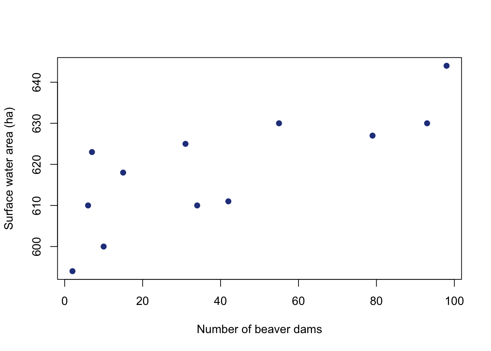
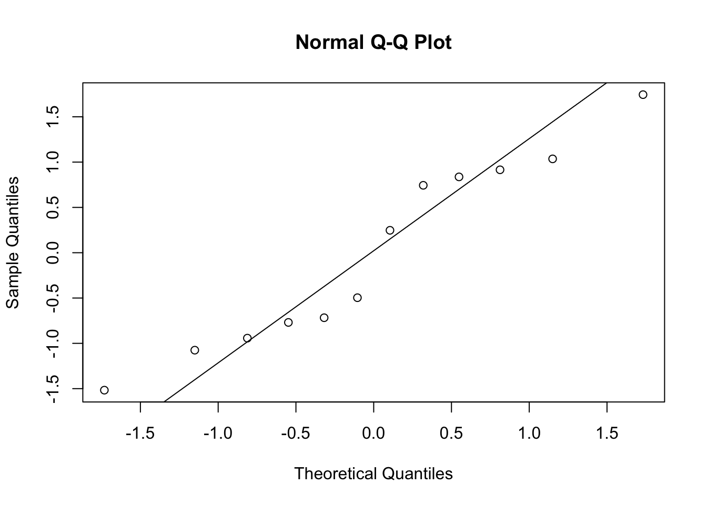
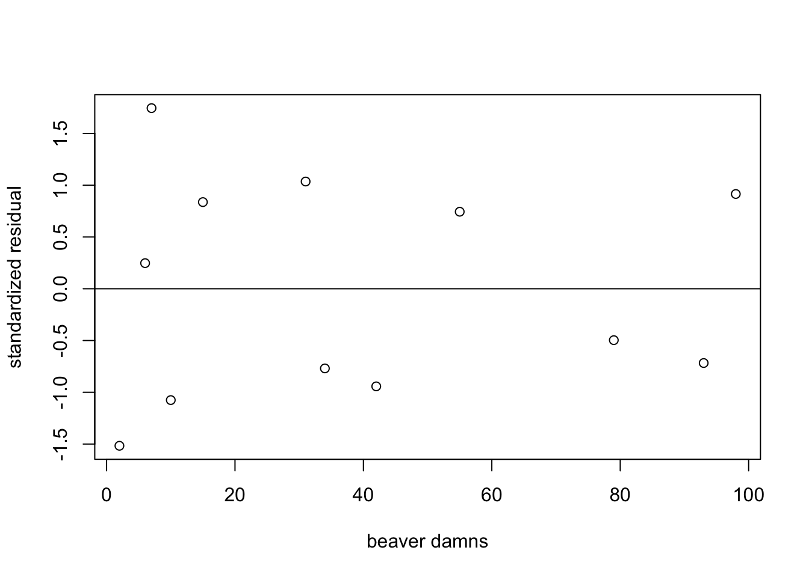
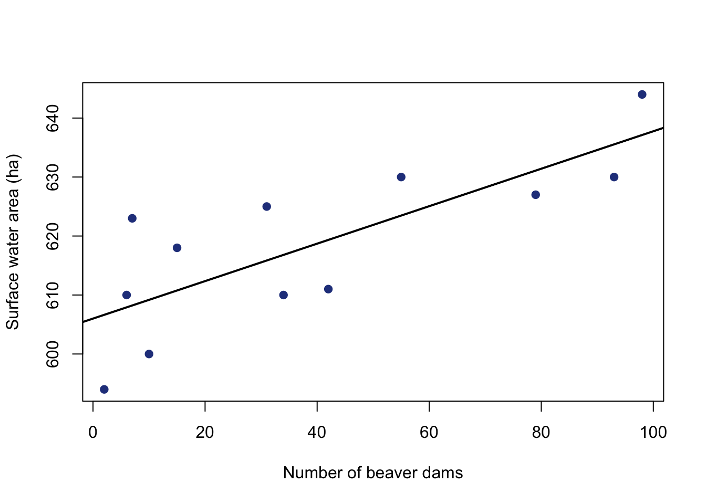
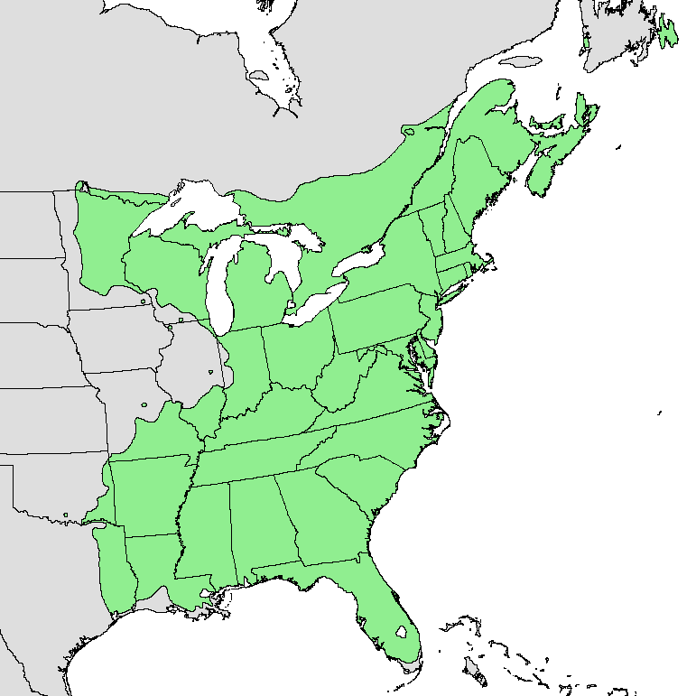
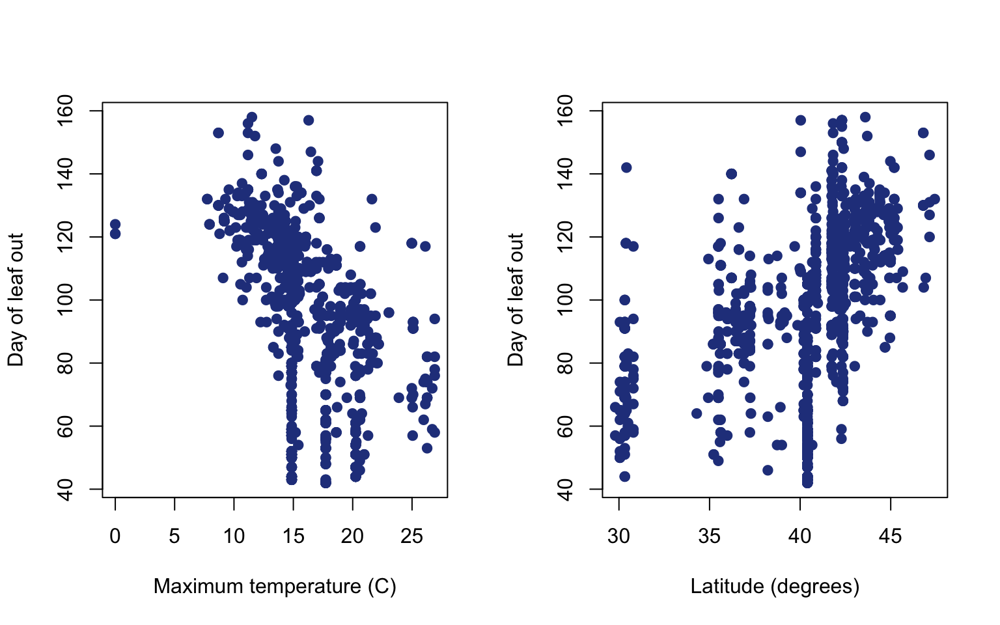
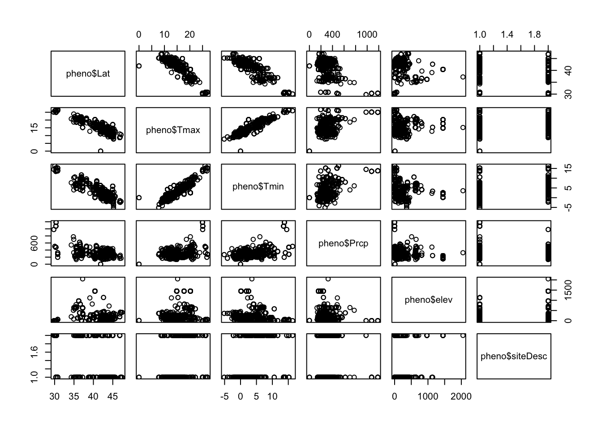
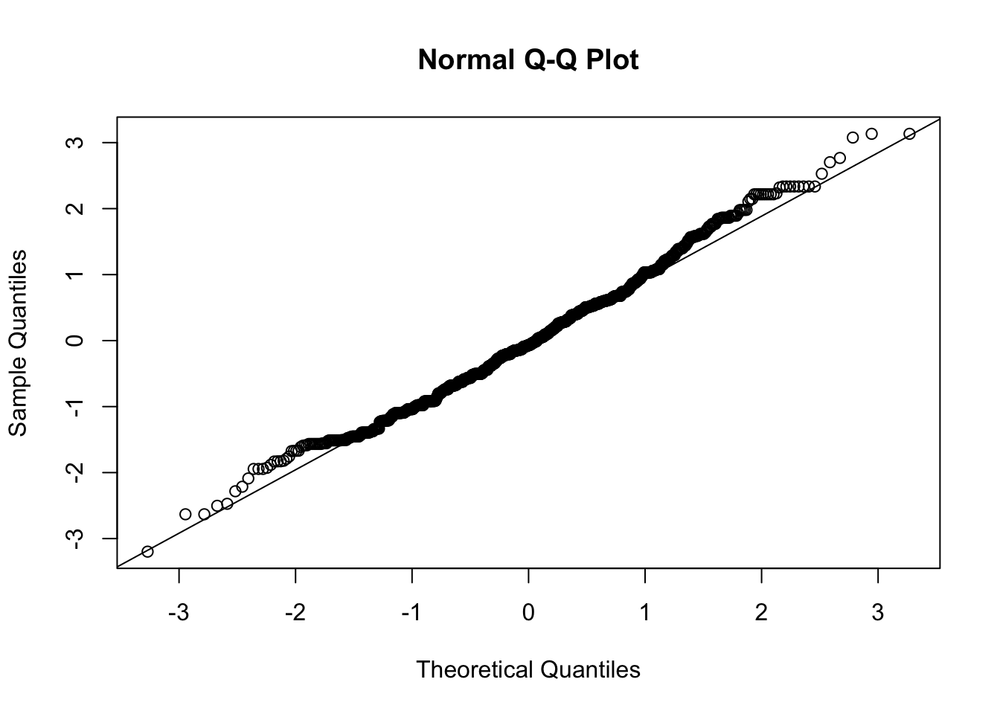
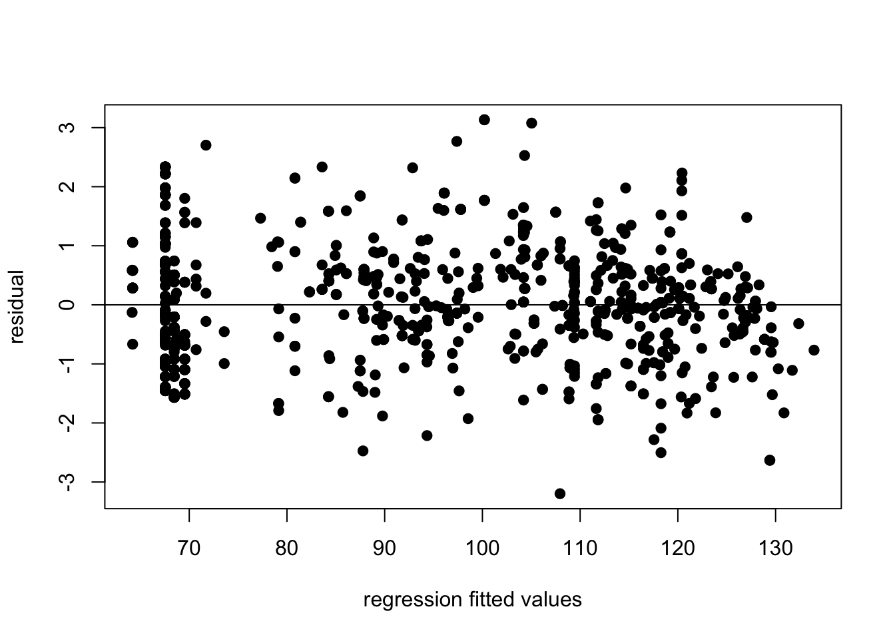

Chapter 6 Introduction to linear regression
by Heather Kropp for ENVST 206: Introduction to Environmental Data Hamilton College
6.1 Learning objectives
- Work with data collected from satellites to examine the impact of beavers on the tundra
- Use citizen science data examine the timing of spring leaf out
- Learn how to conduct a linear regression in R
- Interpret statistical output in R
- Use the
ifelseandparfunction for formatting data and plots
6.2 New functions & syntax
par, ifelse,lm, rstandard, qqnorm, qqline, plot( ~ x1 + x2 + .. xn), par, ifelse
6.3 Simple linear regression: Are beavers flooding the Arctic?
6.3.1 The data
Measures of surface water, vegetation, and land cover/use are commonly derived from satellite observations. Once these features are quantified from the imagery, these repeated observations over time can be used to examine changes in water and the land surface.
Throughout the last couple decades, beavers have notably been moving outside of their typical habitats and colonizing the Arctic tundra. You will start by working with a data collected by Jones et al. using measurements of surface water area taken from satellite imagery and surveys of beaver dams. Beaver dams result in flooding around the bodies of water, and this increase in beaver populations may affect the hydrology and carbon cycling in the Arctic. Below you can see an example of how these measurements were collected.
Surface water can be seen as the black areas in the photographs. Above the red arrow indicates the presence of the beaver dam that appeared in 2012 and the subsequent flooding. Yellow arrows indicate the areas where the frozen ground (permafrost) is beginning to thaw due to the newly formed surface water coverage.
Jones and his coauthors analyzed satellite imagery to identify the presence of beaver dams and changes in surface water in the Baldwin Peninsula Alaska. We will work with the data that examines the surface water area and the number of beaver dams over almost two decades in the tundra.
year dams.n area.ha
1 2002 2 594
2 2007 6 610
3 2008 7 623
4 2009 10 600
5 2010 15 618
6 2011 31 625Here, we are interested in evaluating whether the presence of beaver dams is increasing surface water in the tundra. You will want to focus on the dams.n column which contains the total number of beaver dams in the area and the total area of surface water in hectares: area.ha.
Let’s start by taking a look at the data. Here you will make a scatter plot to visualize the data. You can use the plot function with to generate a scatter plot with x and y data. You will also notice that I am labeling the axes (with units!!!) and specifying that filled in points should be used.
plot(datB$dams.n, datB$area.h,
pch = 19,
col = "royalblue4",
ylab = "Surface water area (ha)",
xlab = "Number of beaver dams")
6.3.2 Set up the regression
Just by looking at the scatter plot, the relationship looks fairly linear. The lm argument is used to specify a linear model. This is the function that will run the linear regression and provide all of the test information. Many of the linear regression assumptions are related to the residuals. You have to run the regression in order to look at the residuals. Note that this is a little different than previous hypothesis tests that required running the assumption checks before running the test. The rstandand function returns standardized residuals.
6.3.3 Checking assumptions
Let’s assess all assumptions of the regression before interpreting results. First we’ll check normality of the residuals:

You’ll notice that the points in the QQ plot mostly follow the line, but the last couple points deviate more from the line. You can also use the Shapiro-Wilks test if you are feeling unsure about whether this is significant enough to be non-normal.
Shapiro-Wilk normality test
data: dam.res
W = 0.92993, p-value = 0.3793Next let’s check the residual plot. The abline function adds a line to a graph, and can be useful for visualizing patterns in residuals. A line at a residual value of zero can be used to assess if there are any trends in the residuals.
#make residual plot
plot(datB$dams.n, dam.res,
xlab = "beaver damns",
ylab = "standardized residual")
#add a horizontal line at zero
abline(h=0)
You can see that there are no major concerns about the regression assumptions around the residuals. You can go ahead and interpret the results.
6.3.4 Interpreting results
You can use the summary function to print out the regression table.
Call:
lm(formula = datB$area.ha ~ datB$dams.n)
Residuals:
Min 1Q Median 3Q Max
-12.639 -7.191 -1.006 6.954 14.772
Coefficients:
Estimate Std. Error t value Pr(>|t|)
(Intercept) 606.00410 4.13835 146.436 < 2e-16 ***
datB$dams.n 0.31769 0.08037 3.953 0.00272 **
---
Signif. codes: 0 '***' 0.001 '**' 0.01 '*' 0.05 '.' 0.1 ' ' 1
Residual standard error: 9.251 on 10 degrees of freedom
Multiple R-squared: 0.6097, Adjusted R-squared: 0.5707
F-statistic: 15.62 on 1 and 10 DF, p-value: 0.002718It can also be helpful to view your regression line on your plot. Putting the regression model in the abline function will automatically draw the regression line.
#make plot of beaver dams and surface water
plot(datB$dams.n, datB$area.h,
pch = 19,
col = "royalblue4",
ylab = "Surface water area (ha)",
xlab = "Number of beaver dams")
#add regression line
#make line width thicker
abline(dam.mod, lwd=2)
6.4 Multiple linear regression: What makes an early spring?
6.4.1 The data
The time that leaves on deciduous trees unfurl from the leaf bud in the spring can impact forest temperatures, water cycling, and the overall productivity of forests. This unfurling of leaves in the spring is called leaf out. Warmer spring temperatures under climate change may result in deciduous plants becoming active earlier. The United States Geological Survey’s National Phenology Network collects data on the timing of plant activity and growth (aka phenology). The NPN relies on the work of plant scientists and interested volunteers, called citizen scientists. Many people can readily identify when leaf out is occurring, and dedicated citizen scientists help document where and when leaf out happens. This greatly increases the amount and spatial coverage of leaf out data beyond what research scientists are able to go out and observe themselves.
We will focus on the leaf out of the red maple, a tree common throughout the eastern United States.

By U.S. Geological Survey - Digital representation of "Atlas of United States Trees" by Elbert L. Little, Jr. [1], Public Domain
Read in the data:
The data contains the day of year (doy) that leaf out occured and the year (year) of occurrence. Day of year counts the days in the year where January 1st is day of year 1 and December 31st (non-leap year) is day of year 365. There are also latitude (Lat) and longitude (Long) observations for each leaf out event. Latitude can be associated with differences in solar radiation and temperature. Longitude lower values of longitude will be further west in the continental US and higher values will represent more eastern areas up to the Atlantic coast. There are meteorological data that describes the general environmental conditions including the maximum temperature (Tmax, \(^\circ\) C ), minimum temperature (Tmin, \(^\circ\) C ), precipitation (Prcp, mm) for each location of measurement. There is also an elevation observation (elev, m). Higher elevations can be associated with colder temperatures and longer periods of snow cover. There is also a description of whether the site is urban or rural (siteDesc, “Urban” or “Rural”). The main variable of interest is the doy variable that describes when the leaf out occurred. Let’s take a look at how that is related to to variables like the maximum temperature and precipitation.
6.5 Panels of bivariate plots
Sometimes it useful to view bivariate plots (two variables) side by side for a multiple regression. You can look at plots side by side using the par function. par specifies parameters around plotting and you can use arguments like mfrow to specify showing multiple plots in a panel. The mfrow argument needs a vector of two numbers for input. The first number should be the number of rows of plots in the panel and second is the number of columns of plots.
#set up panel of plots with one row and two columns
par(mfrow=c(1,2))
plot(pheno$Tmax,pheno$doy,
pch = 19,
col = "royalblue4",
ylab = "Day of leaf out",
xlab = "Maximum temperature (C)")
plot(pheno$Lat,pheno$doy,
pch = 19,
col = "royalblue4",
ylab = "Day of leaf out",
xlab = "Latitude (degrees)")
Rstudio will automatically default to using this par argument until you tell it to stop. You can either hit the broom button above the plot to clear your plotting area or you can also run the command:
6.6 Check for multi-collinearity
Temperature appears to have an impact on the timing of leaf out, but we will want to see if other variables such as precipitation or elevation of the site may impact the timing of leaf out. Let’s see if there will be any issues looking at multiple variables at once. Let’s check for correlations. We’ll do a visual assessment and look at the correlations. You can use the plot function to generate a series of covariance plots. Covariance plots set up a matrix of plots and compares all possible combinations of variables. Notice that there is a formula used here, but there is no dependent variable only many independent variables that could be used in the regression.

You’ll notice that there are no real patterns between temperature and precipitation variables. However, variables such as latitude and both temperature variables look to have a tight linear relationship. Just visually you can see that including both latitude and the maximum temperature would be problematic. This is not surprising given that solar radiation plays a major role in warming the earth’s surface, and the input of solar radiation varies with latitude. In this case, we will want choose the variable that best represents the process and makes the most sense. Here, we know that temperature directly impacts metabolic activity and the ability of plants to come out of dormancy. Any patterns with latitude would likely be reflecting differences in temperature across latitude, and temperature is known to directly impact leaf out.
6.7 Run the regression
Let’s build a multiple regression that investigates the relationship between leaf out phenology and latitude, precipitation, longitude, and the urban/rural designation. You’ll notice the urban/rural designation is a character. You will want to code this as a zero and one for the regression. You can use the ifelse function to make this variable. ifelse uses three arguments: the first one is a logical statement to be evaluated, the second is a value to include in the vector if the statement is true, and the last is a value to include in the vector if statement is false.
Note that this will be a binary variable in our regression.You will think a little bit more about how to interpret those results after you run the regression.
The multiple regression set up in R will look similar to the simple linear regression:
Notice how instead of one variable there is now an added plus sign for each new variable. Now you can evaluate the assumptions just like the simple linear regression (assuming you already looked at multicollinearity before running the regression).
Note that there are 1,244 observations in this data and the Shapiro Wilks test is not meant for data with more than 1,000 observations. You will want to use the qqnorm evaluation:

You also will want to use the fitted values for your regression in your residual plot given that there are multiple covariates in this case. You can calculate the fitted values from the regression line for each observation using the fitted function:
#get fitted values
mlFitted <- fitted(mlr)
#make residual plot
plot(mlFitted,mlr.res,pch=19,
xlab="regression fitted values",
ylab="residual")
abline(h=0)
Does it seem strange to you that there are many data points at the same x value in this graph? What about in the bivariate plots of temperature? If it does seem strange, good eye! We will cover these issues in the homework.
6.8 Interpret the regression
Next let’s look at the regression table to evaluate the relationships with leaf out.
Call:
lm(formula = pheno$doy ~ pheno$Lat + pheno$Prcp + pheno$Long +
pheno$urID)
Residuals:
Min 1Q Median 3Q Max
-53.943 -11.547 -1.155 10.346 52.796
Coefficients:
Estimate Std. Error t value Pr(>|t|)
(Intercept) 76.780740 11.258812 6.820 1.65e-11 ***
pheno$Lat 2.699841 0.213306 12.657 < 2e-16 ***
pheno$Prcp 0.023409 0.004544 5.152 3.16e-07 ***
pheno$Long 1.107019 0.051204 21.620 < 2e-16 ***
pheno$urID -6.064702 1.480484 -4.096 4.56e-05 ***
---
Signif. codes: 0 '***' 0.001 '**' 0.01 '*' 0.05 '.' 0.1 ' ' 1
Residual standard error: 16.92 on 924 degrees of freedom
(315 observations deleted due to missingness)
Multiple R-squared: 0.6168, Adjusted R-squared: 0.6152
F-statistic: 371.9 on 4 and 924 DF, p-value: < 2.2e-16Let’s think a little more about how this urban/rural variable and how to interpret it in a regression. Keep in mind that urban built environments can have surfaces that are typically much warmer than surrounding natural vegetated environments. Dark paved surfaces and buildings absorb greater levels of solar radiation, resulting in higher temperatures in the immediate urban area. Remember urban sites will be marked with a one and rural areas are marked with a zero. Consider the interpretation of the slope coefficient x1 versus x0. Remember urban sites will be marked with a one and rural areas are marked with a zero.
6.9 Citations
Beavers & surface water
Jones, Benjamin M., et al. “Increase in beaver dams controls surface water and thermokarst dynamics in an Arctic tundra region, Baldwin Peninsula, northwestern Alaska.” Environmental Research Letters 15.7 (2020): 075005.
Red maple phenology
USA-NPN National Coordinating Office. 2016. USA National Phenology Network data product development framework and data product catalog, v 1.1. USA-NPN Technical Series 2016-001. www.usanpn.org.